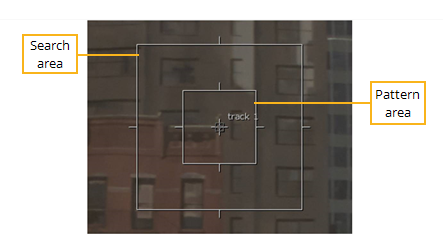
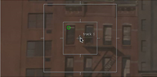

每个轨道锚由一个 模式 和 搜索 区域:
• 模式 -目标像素跨多个帧跟踪。这种模式应该尽可能与周围的框架不同，并在整个序列的大部分时间内保持可见。
• 搜索 -当前帧中可能在下一帧中找到图案的区域。大型搜索区域会影响性能。

| 1。 | 将定位点中心的十字准线拖动到要跟踪的图案上，或手动调整 Track_x 和 Track_y 中的字段 轨道 列表。 |
在这个例子中，建筑的拐角处就在十字准星的正下方。
注意: 您可以启用 设置 > 捕捉到标记 在放置锚时帮助你。
注意:
是否选择
斑点
或
角落
,当您拖动锚点时，查看器中会显示一个指南，突出显示可能的模式。

释放鼠标将锚点捕捉到标记。
| 2. | 使用以下方法根据需要调整图案和搜索区域: |
• 单击并拖动边界以在单个轴上进行调整。例如，拖动垂直边界可调整 x 轴上的区域。
• 单击并拖动边界的角以在两个轴上进行调整。保持 转变 ,单击并拖动以缩放该区域。
注意: 保持 Cmd / Ctrl 不对称地调整边界，也就是说，不管锚位置如何。
| 3. | 通过单击重置图案和搜索区域 在查看器工具中。 |
|
|